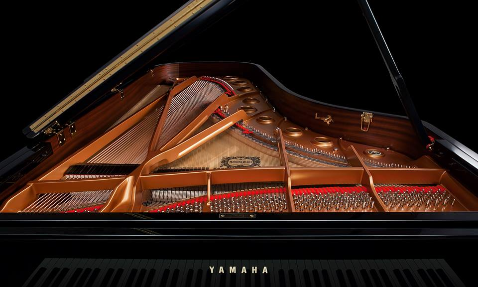
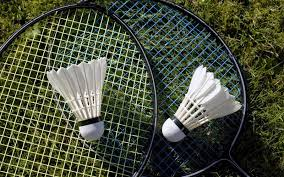
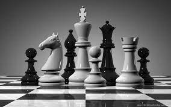

Piano
One of my extracurricular activities include playing the piano. I started playing the piano on August 2020 and I'm still playing since then. I enjoy playing the piano because I like music. Music is what keeps me energetic and keeps me entertained.
Badminton
I enjoy playing badminton because it is a great sport in general. I will always play badminton when I get the chance. You need to use some brain power to play the game because it can get competitive. Hitting the birdie and getting a point feels nice and is a reason why I like it. Not only is this sport fun, there is also some movement required which makes the game challenging.
Chess
Chess is an entertaining board game and very strategic. Capturing the enemy king is always a challenge for me. Chess involves critical thinking which makes the game difficult. I played chess for over a year and I have improved a bit over the months. I also participated in a chess club at my school and unfortunately did not win, but it was a great experience.
